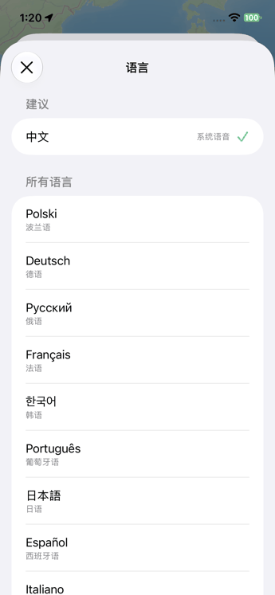

CityYoYo 现已支持 11 种语言
在 AI（Claude Code）协助下撰写，并由创始人审阅。
CityYoYo 最初只有英语，之后陆续加入了中文、韩语、西班牙语、葡萄牙语和法语。3.18 版本再新增五种：德语、意大利语、日语、俄语和波兰语。你听到的讲解和应用里的每一个界面都包括在内。
- English
- 中文
- 한국어
- Español
- Português
- Français
- Deutsch
- Italiano
- 日本語
- Русский
- Polski
为什么是这五种
我们是看着已有用户来选的。不少手机语言设为德语、意大利语、日语、俄语和波兰语的旅行者打开了 CityYoYo 和 ChinaWalk，最后却在听英语讲解。俄语主要出现在 ChinaWalk，也就是我们为来华旅行者做的应用。这几处缺口最大，所以先补上。
不只是讲解，而是整个应用
选择 Italiano，你刚点的那条小巷的故事就会用意大利语讲给你听。按钮、设置、漫游模式的提示和城市列表也都会变成意大利语。地图上的地名同样跟随讲解语言：如果你的手机是中文，但想用日语听东京，每个图钉下方的地名也会一起换成日语。

一打开就是你的语言
新安装时，如果手机语言属于这 11 种之一，就直接使用该语言，否则使用英语，不必先去设置里翻找。如果你已经在用 CityYoYo，在你选择其他语言之前不会有任何变化。选择界面用每种语言自己的名称显示，并在顶部建议你的手机语言。
iPhone 上的语音更好了
在 iPhone 上，CityYoYo 的高品质 AI 语音直接在设备上运行，现在已内置在应用中，第一次导览前不需要再单独下载语音。这一语音支持除中文以外的所有语言，中文目前仍使用系统语音。我们还修复了日语讲解的断句方式，不会再把长段内容连在一起。
ChinaWalk 同步支持
ChinaWalk 同样支持这 11 种语言。来北京或西安的游客，现在也能把中文地名和背后的故事翻译成德语、意大利语、日语、俄语或波兰语来听。依然无需 VPN。
在 App Store 或 Google Play 更新到 3.18，然后在设置中选择语言。如果你希望 CityYoYo 支持我们还没有的语言，欢迎在 App Store 或 Google Play 评论里告诉我们。我们会参考这些建议来决定下一批语言。
初心不变：在任何地方点按任何地点，听它的故事。现在支持更多语言。
免费下载。